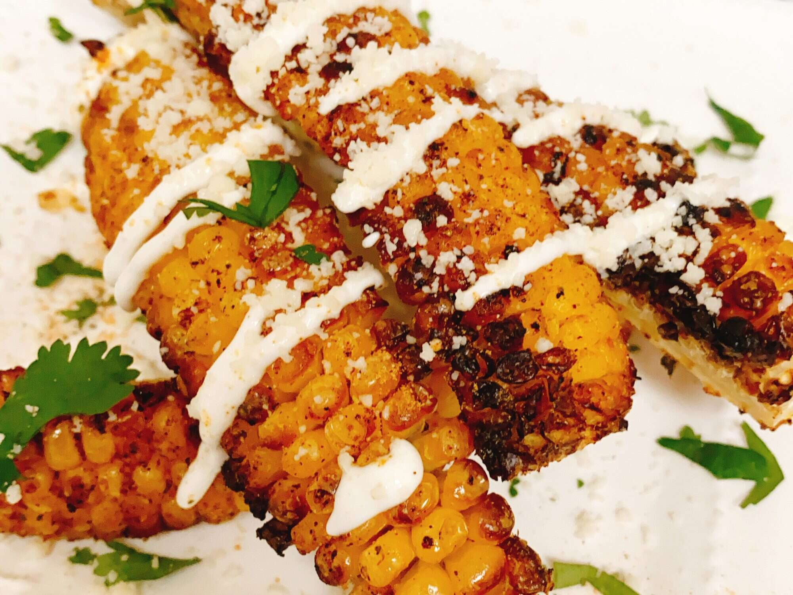

Air Fried Corn Ribs

Description
Corn ribs but... air fried! I guess an easier and healthier way of eating.
It should be crispy too!
Ingredients
- 4 ears ears corn on the cob
- 3 tablespoons "Everything but the Elote seasoning" (Trader Joe's®), divided
- nonstick cooking spray
- ¼ cup grated cotija cheese
- 2 tablespoons Mexican crema, crema fresca
- 1 tablespoon minced fresh cilantro, or more to taste
Steps
- Preheat an air fryer to 400 degrees F (200 degrees C) for 7 minutes.
- Meanwhile stand corn cobs on the end, and with a sharp knife (I used a wüsthof nakiri) cut each ear down the middle. Place corn cob halves flat on a cutting board and cut in half lengthwise (you will get a total of 4 'ribs' per ear of corn).
- Spray each corn rib with non-stick spray. Sprinkle 2 tablespoons of seasoning over the 16 corn ribs.
- Air fry corn ribs in batches for a total of 12 minutes. Remove from air fryer.
- Drizzle crema con sal over corn 'ribs' and sprinkle with cotija cheese and remaining seasoning. Garnish with chopped cilantro.
Return to homepage